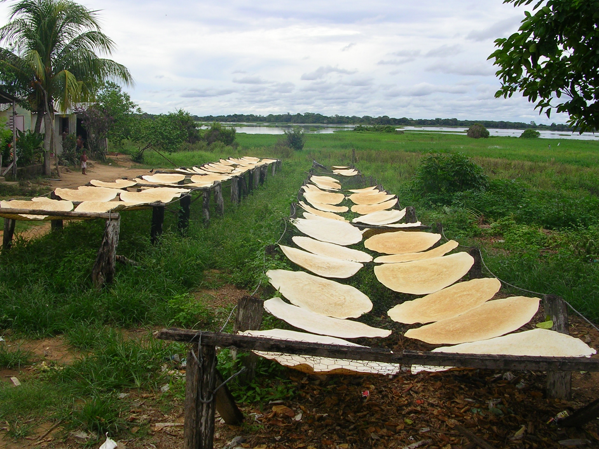

Capa 1 · La base, hecha de yuca desde cero
Casabe
Una torta fina y crujiente. Para el producto rallamos la yuca, le sacamos el líquido y la cocinamos sin aceite.
Es un alimento ancestral de pueblos como los Sikuani y los Piapoco, que lo siguen preparando en budares de barro en Vichada y Casanare, igual que hace siglos. El emprendimiento sikuani Peri y Matsuka produce casabe y mañoco para fortalecer la seguridad alimentaria en la Orinoquía.
Un saber, no solo un ingrediente. Con la yuca brava hay que rallar, prensar, tamizar y cocinar, porque cruda es tóxica. Alguien descubrió hace muchísimo tiempo cómo quitarle el veneno a una raíz para poder comer de ella.